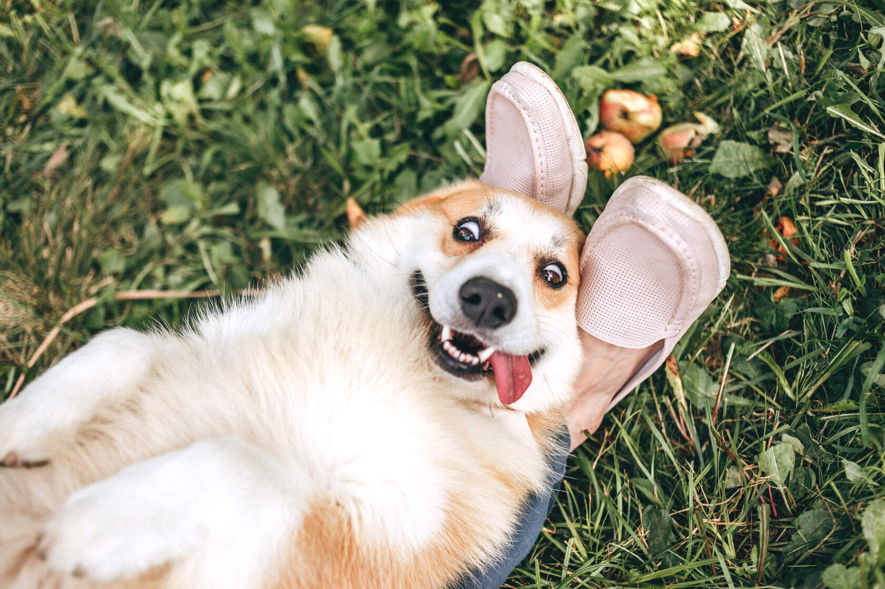

Corgi
Dog breed

Learn more about this dog breed:
Wiki- Pembroke Welsh Corgi
- Cardigan
A pet that can be loved for a smile
I just adore this breed of dog. They are always smiling . Looking at them, I see a little anchony, it's so funny. They love to run and play, especially, with other breeds of dogs. Sometimes, their owner is jealous of other people or animals.
By the way, this is small tipe of sheep breed that was created an Wales . There is information that this breed was created specifically for grazing cows.
These pets aregreat friends, loyal and kind . They get along easily with other breeds of dogs, are brave and are not afraid of big dogs.
Having a Corgi dog means having a beautiful and cheerful family friend who will please the owner's eye.